import numpy as np
import matplotlib.pyplot as plt
from scipy import signalQPSK-Sync
1 Measuring the delay between two QPSK signals
In this notebook, we’ll create and send two overlapping pseudo-random QPSK signals over a noisy reception channel. We’ll delay one of the signals relative to the other when simulating transmission. We’ll recover this delay, with sub-sample accuracy, using correlation and measuring the distance between the peaks.
1.1 The transmit signals (TX1 and TX2)
Fs = 20e6 # 20 MHz sample rate
SPS = 4 # Samples per symbol
Taps = 61
def rc_filter(taps, beta=0.33):
Ts = SPS
t = np.arange(taps)
t -= (taps - 1) // 2 # Center the indices around 0
h = 1 / Ts
h *= np.sinc(t / Ts)
h *= np.cos(np.pi * beta * t / Ts)
h /= 1.0 - (2.0 * beta * t / Ts) ** 2
return h * np.sqrt(Taps)
def rrc_filter(taps, beta=0.33):
# Create an RC filter
hrc = rc_filter(taps, beta)
# Take the square root of the RC filter in the frequency domain to obtain the frequency response of the
# desired root raised cosine (RRC) filter.
Hrc = np.fft.fft(hrc)
Hrrc = np.sqrt(np.abs(Hrc))
# Perform an IFFT to obtain the impulse reponse. Optionally, we could use the frequency response directly
# and avoid the more expensive convolution operation to apply the filter (as multiplying in the frequency
# domain is equivalent to convolution in the time domain)
hrrc = np.fft.fftshift(np.fft.ifft(Hrrc))
return hrrc.real
Why RRCs? Why not simple low pass filters?
Create and use a root raised cosine filter so that when the receiver also uses an RRC filter, the complete, end-to-end channel response is thatof a raised cosine filter, which is pretty good at minimizing inter-symbol interference (ISI).
pulse = rrc_filter(taps=Taps)
t = np.arange(pulse.shape[0]) - (pulse.shape[0] - 1) / 2
sp = np.fft.fftshift(np.fft.fft(pulse))
freq = np.fft.fftshift(np.fft.fftfreq(t.shape[0]))
fig = plt.figure()
plt.plot(t, pulse, ".-")
plt.ylabel("Magnitude")
plt.title("Impulse Response (Time Domain)")
plt.grid(True)
fig = plt.figure()
plt.plot(freq, np.abs(sp), ".-")
plt.ylabel("Magnitude")
plt.title("Frequency Response")
plt.grid(True)
plt.show()
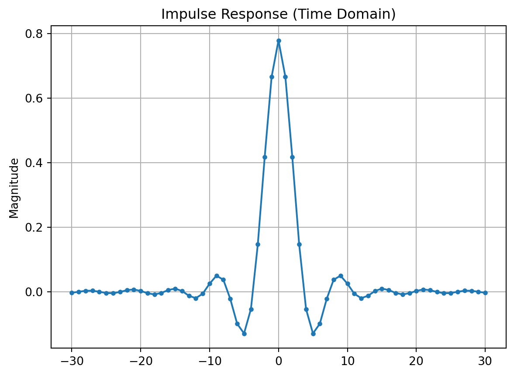
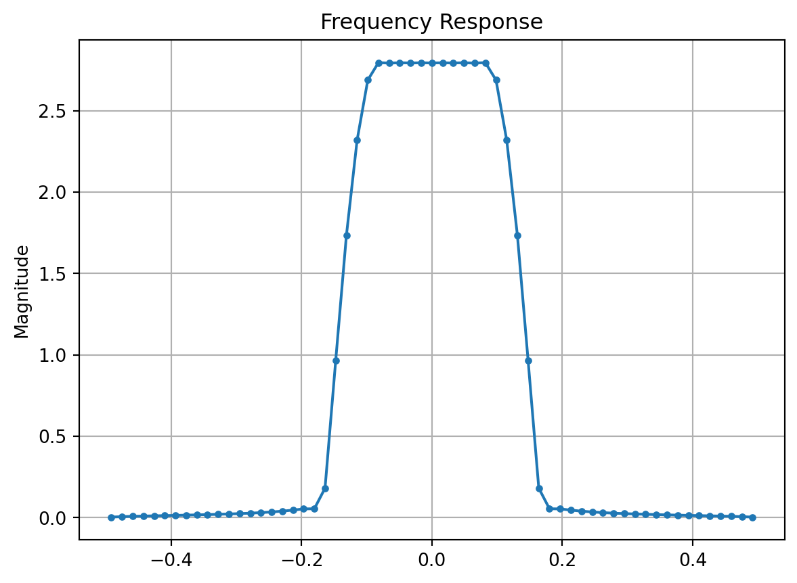
Caution
As a sidenote, observe that the units for the frequency response’s x-axis aren’t immediately obvious. (The time domain obviously has units in Ts where Ts is the sampling period.) When ‘digitizing’ an analog signal one must sample it leading to an implied assumption that everything happening before and after the samples were taken will repeat (the signal is periodic with period N). From this assumption, we get the digital frequency of the signal repeating (or in more technical terms, aliasing) around every 2\(\pi\) radians.
Our frequency response (obtained by the DFT of the time domain signal) only extends between -\(\frac{\pi}{2}\) and \(\frac{\pi}{2}\). To convert these into analog frequencies between \(\frac{-f_s}{2}\) and \(\frac{f_s}{2}\) use the formula: \[\Omega = 2\pi * \frac{f}{f_s} \]
Let’s geneate our complex pseudo-random sequences (pulse trains). The longer the sequence we create, the more confident we can be at the receiver end which TX signal we are seeing and when.
Code
Ns = 2000 # Number of symbols to generate
N = Ns * SPS # Number of samples
BPS = 2 # QPSK has 2 bits per symbol
Nd = 23 # Number of symbols to display
def gen_pulse_train():
sym = np.random.randint(0, BPS**2, Ns)
s = np.zeros(N, dtype=complex)
for i, ss in enumerate(sym):
s[i * SPS] += (ss & 0b01) - 0.5
s[i * SPS] += 1j * (((ss & 0b10) >> 1) - 0.5)
return sCode
x = gen_pulse_train()
y = gen_pulse_train()
fig = plt.figure()
plt.plot(np.real(x), "r.-")
plt.plot(np.imag(x), ".-")
plt.ylabel("Value")
plt.title("Impulse train X")
plt.xlim((0, Nd))
plt.ylim((-1, 1))
plt.grid(True)
Oversampling = 25
fig = plt.figure()
plt.plot(np.repeat(np.real(x), Oversampling), "r.-")
plt.plot(np.repeat(np.imag(x), Oversampling), ".-")
plt.ylabel("Value")
plt.title("Oversampled Impulse train X")
plt.xlim((0, Oversampling * Nd))
plt.ylim((-1, 1))
plt.grid(True)
fig = plt.figure()
plt.plot(np.real(y), "r.-")
plt.plot(np.imag(y), ".-")
plt.ylabel("Value")
plt.title("Impulse train Y")
plt.xlim((0, Nd))
plt.ylim((-1, 1))
plt.grid(True)
fig = plt.figure()
plt.plot(np.repeat(np.real(y), Oversampling), "r.-")
plt.plot(np.repeat(np.imag(y), Oversampling), ".-")
plt.ylabel("Value")
plt.title("Oversampled Impulse train Y")
plt.xlim((0, Oversampling * Nd))
plt.ylim((-1, 1))
plt.grid(True)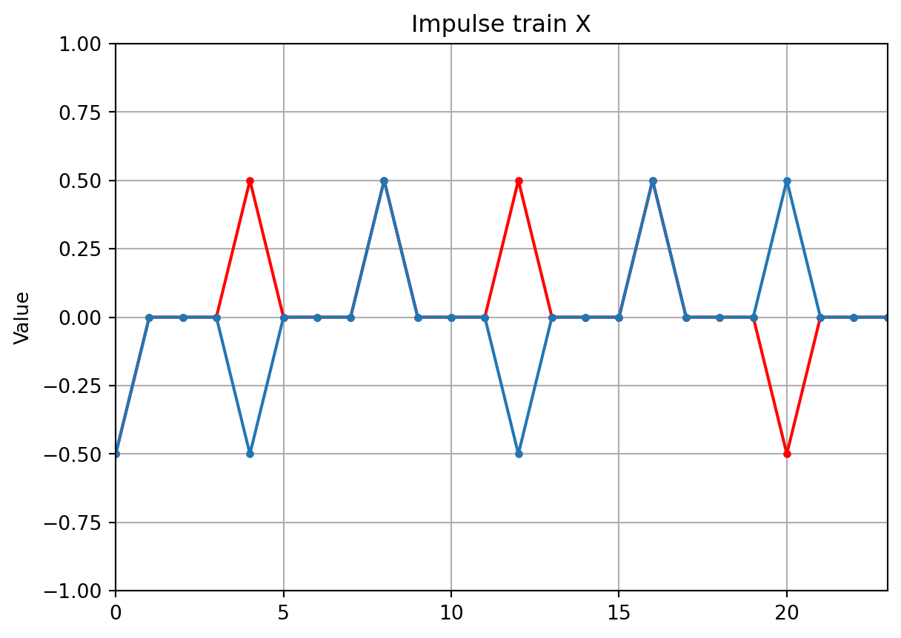
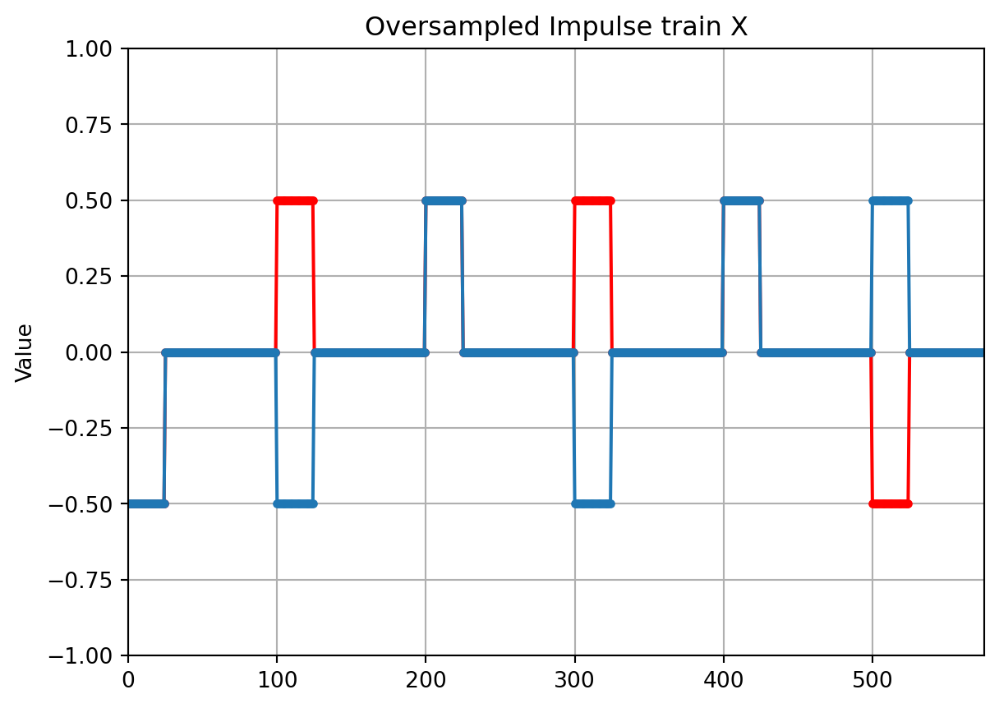
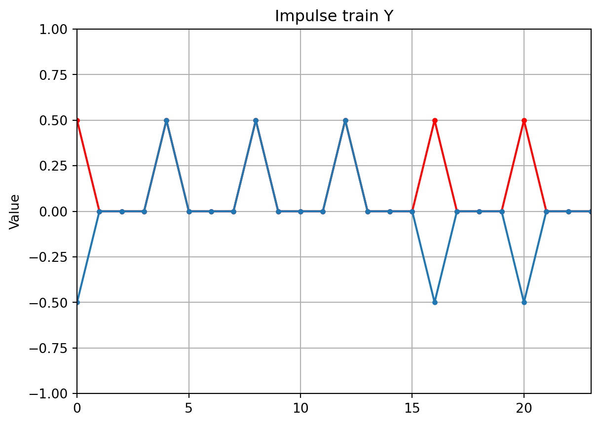
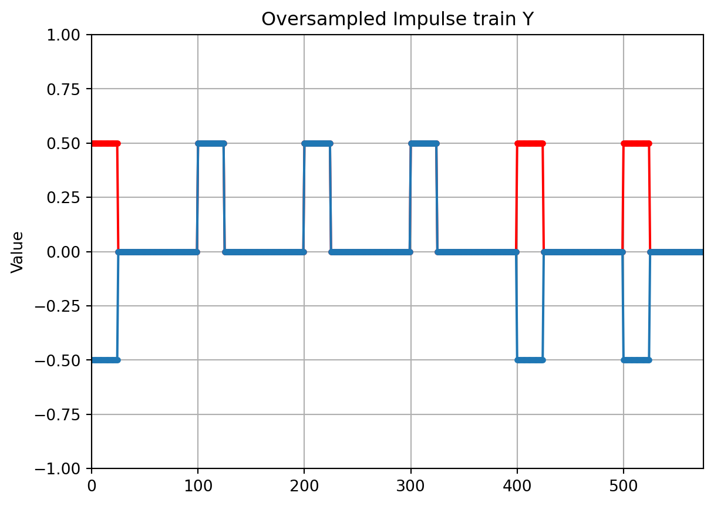
Generated Random Impulse Trains
1.1.0.1 Interlude: Representing QPSK data
For QPSK we have 4 symbols that we would like to represent as IQ data. Therefore, we need a mapping from the linear {0b00, 0b01, 0b10, 0b11} to a complex {(-0.5 - j0.5), (0.5 - j0.5), (-0.5 + j0.5), (0.5 + j0.5)}
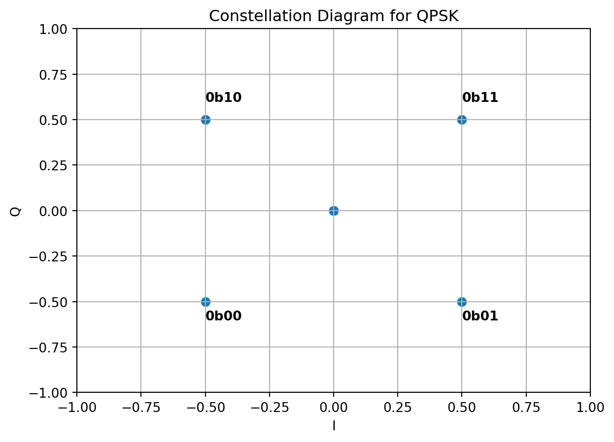
1.2 Pulse Shaping Our Data
Code
tx1 = signal.convolve(x, pulse)
tx2 = signal.convolve(y, pulse)
# Convolution has the effect of making our signal a bit longer (N + Taps/2 - 1)
t = np.arange(tx1.shape[0])
fig = plt.figure()
plt.plot(np.real(tx1), "r.-", np.imag(tx1), ".-")
plt.ylabel("Value")
plt.title("TX1")
plt.xlim((Taps//2, SPS * Nd))
plt.grid(True)
fig = plt.figure()
plt.plot(np.real(tx2), "r.-", np.imag(tx2), ".-")
plt.ylabel("Value")
plt.title("TX2")
plt.xlim((Taps//2, SPS * Nd))
plt.grid(True)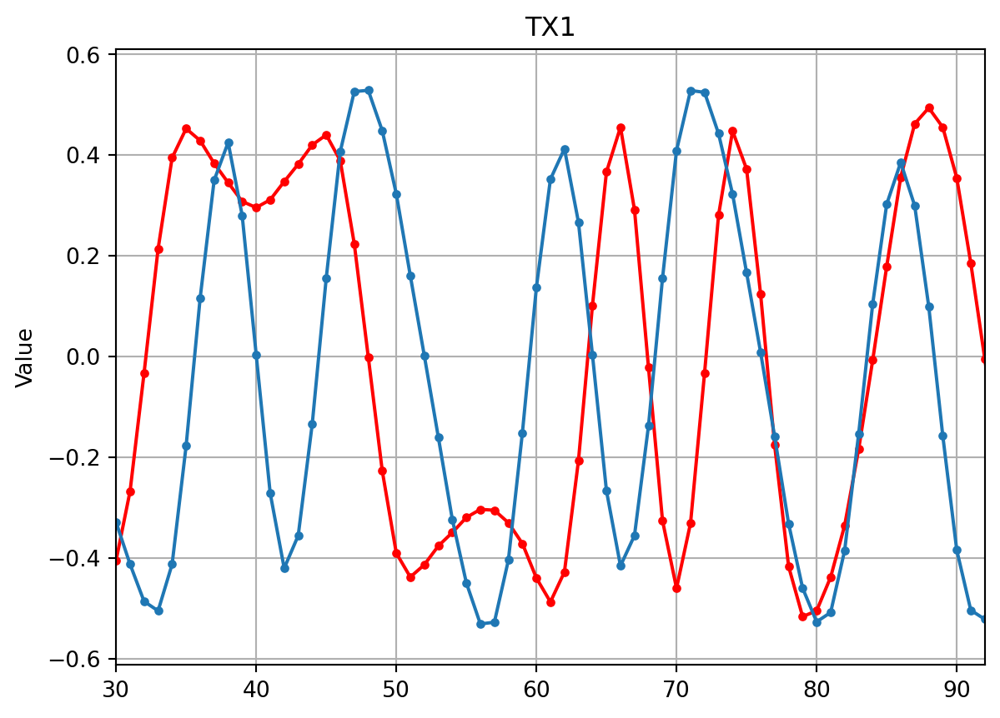
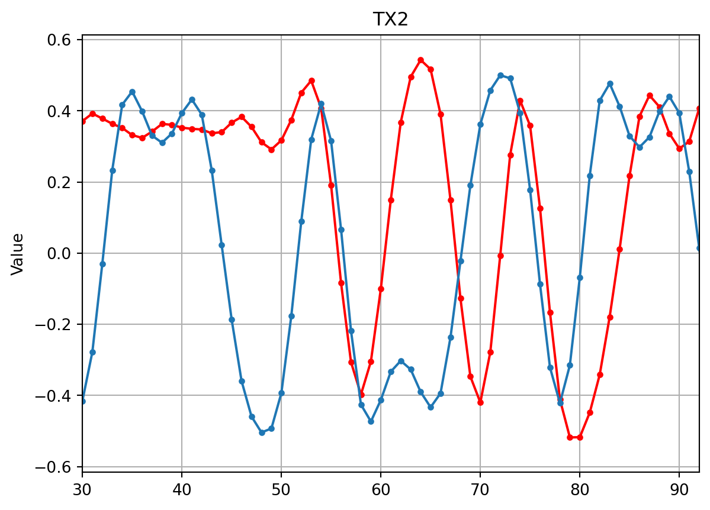
Pulse shaped bits to be transmitted
Note
What we see above are signals that are more resilient to inter-symbol interference due to the RRC filter we applied on both ends of our chain. A lowpass filter is applied before and after transmission to reduce the spectrum usage of our signal (and for noise resilience). A great article on the topic by Dr. Marc Lichtman can be found on PySDR.org.
Code
IQd = 500 # Raw IQ Samples to display
fig = plt.figure()
plt.title("TX1 IQ Constellation")
plt.ylabel("Quadrature")
plt.xlabel("In-phase")
plt.ylim((-1, 1))
plt.xlim((-1, 1))
plt.plot(np.real(tx1[Taps//2:IQd:SPS]), np.imag(tx1[Taps//2:IQd:SPS]), ".")
plt.plot(np.real(x[0::SPS]), np.imag(x[0::SPS]), "r.")
plt.show()
fig = plt.figure()
plt.title("TX2 IQ Constellation")
plt.ylabel("Quadrature")
plt.xlabel("In-phase")
plt.ylim((-1, 1))
plt.xlim((-1, 1))
plt.plot(np.real(tx2[Taps//2:IQd:SPS]), np.imag(tx2[Taps//2:IQd:SPS]), ".")
plt.plot(np.real(y[0::SPS]), np.imag(y[0::SPS]), "r.")
plt.show()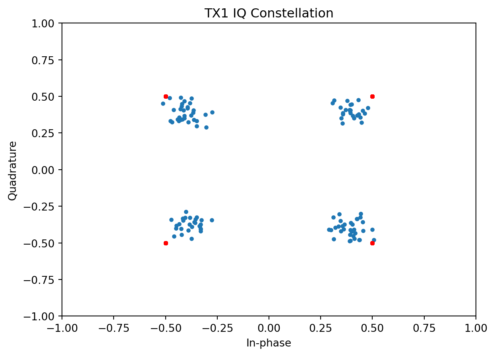
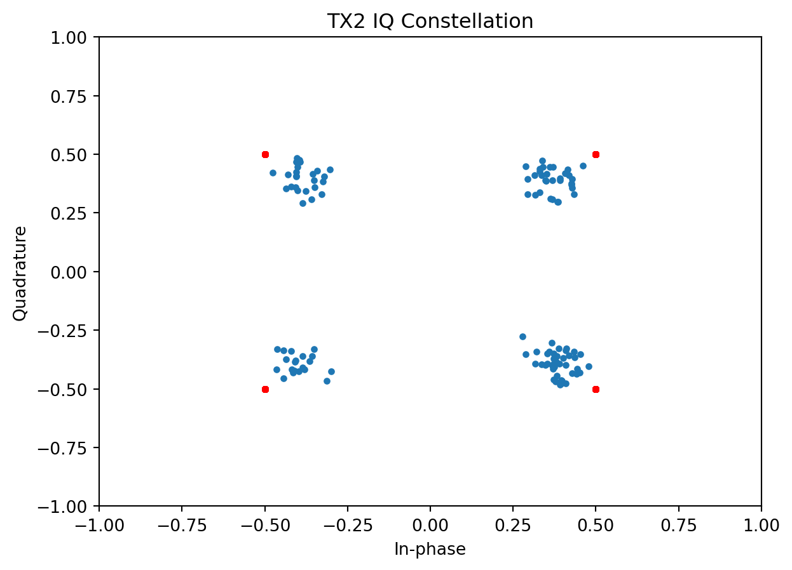
IQ samples of TX1 and TX2
From the IQ diagrams, we can see that the two transmission signals are both clean QPSK.
Code
ac1 = signal.correlate(tx1, tx1)
ac2 = signal.correlate(tx2, tx2)
cc = signal.correlate(tx1, tx2)
ac1 = signal.correlate(tx1, tx1)
ac2 = signal.correlate(tx2, tx2)
cc = signal.correlate(tx1, tx2)
t = np.arange(ac1.shape[0]) - (ac1.shape[0] - 1) / 2
top = np.max((np.abs(ac1), np.abs(ac2), np.abs(cc)))
plt.figure(figsize=(16, 4))
plt.subplot(131)
plt.plot(t, np.abs(ac1), ".-")
plt.ylabel("Correlation")
plt.title("Autocorrelation TX1")
plt.xlim((-64, 63)) # Display the center 128 samples
plt.ylim((0, top))
plt.grid(True)
plt.subplot(132)
plt.plot(t, np.abs(cc), ".-")
plt.xlabel("Lag")
plt.title("Crosscorrelation TX1:TX2")
plt.xlim((-64, 63))
plt.ylim((0, top))
plt.grid(True)
plt.subplot(133)
plt.plot(t, np.abs(ac2), ".-")
plt.title("Autocorrelation TX2")
plt.xlim((-64, 63))
plt.ylim((0, top))
plt.grid(True)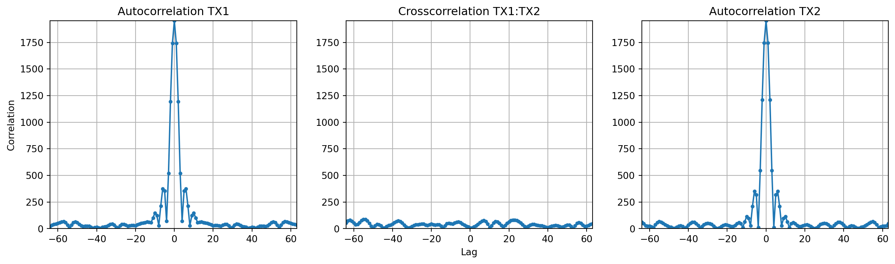
Correlation between TX1 and TX2
Observe the sharp auto-correlation peaks for each transmit signal. Also observe that the transmit signals’ cross-correlation is very low; they don’t correlate with each other well at all. This demonstrates that our signals have the properties we expected when we constructed them.
2 Communication Channel Simulation
Our next step is to simulate the communication channel. We’ll add a coarse (sample level) and fine (subsample level) delay to TX2. We’ll then sum the two signals together. Finally, we’ll add some additive white gaussian noise (AWGN). We can also simulate mulitipath effects by passing the channel through a special sort of filter that emulates the effect of our signal being delayed by bouncing around and not taking a straight line path. Again, a great resource is PySDR.org which has a section on multipath fading. As the signals Both our Tx signals don’t necessarily have to take the same path to get to the receiver either, making it even harder to imagine what the delays and attenuations both signals went through to get to the Rx1. For now let’s assume we have no fading as our channel stays constant through time (meaning the environment throgh which our signals propagate remains unchanging.) Otherwise, we would also have to account for a signal to noise ratio that changes with time as either our Tx’s, our Rx, or our environment changes.
To keep things uncomplicated, let’s just model our channel impulse response as something simple that will still account for the delays and attenuation from our signal going outside our line of sight.
def apply_fractional_delay(s, delay=0.4):
# Create and apply fractional delay filter
# delay is fractional delay, in samples
N = 23
n = np.arange(-N // 2, N // 2)
h = np.sinc(n - delay)
h *= np.hamming(N) # Window the filter to avoid edge artifacts
h /= np.sum(h) # Normalize
return np.convolve(s, h)
def apply_sample_delay(s, delay=1):
return np.concatenate((np.zeros(delay), s))
def apply_frequency_offset(s, fo=13e3):
# Simulate a frequency offset (fo)
Ts = 1 / Fs # Sample period
t = np.linspace(0, Ts * len(s), len(s))
return s * np.exp(1j * 2 * np.pi * fo * t) # Shift frequency by fo
def apply_noise(s, level=0.3):
# Simulate adding AWGN
N = len(s) # Number of samples
n = (np.random.randn(N) + 1j * np.random.randn(N)) / np.sqrt(2)
return s + n * level
def apply_channel_multipath(s):
# Multipath for a channel using randomly selected values for attenuation and delay.
# A better analysis would incorporate Rayleigh or Rician fading.
# This is only a first approximation.
h = np.array([1, 0, 0, 0, 0, 0.5, 0, 0, 0, 0, 0.12, 0, 0, 0.001])
return np.convolve(s, h)
# Note: We extend the TX1 signal by the delay amount, so that we can later sum the TX signals when simulating
# our receive channel.
delay = 2
tx1d = np.append(tx1, np.zeros(delay))
tx2d = apply_sample_delay(tx2, delay)
# Note: We apply fractional delay to both TX signals as we want to delay both equally by the filter length.
# Without this, TX2 would seem to arrive much later than TX1.
tx1d = apply_fractional_delay(tx1d, 0)
tx2d = apply_fractional_delay(tx2d, 0.5)
rx1 = (tx1d + tx2d) / np.sqrt(2)
# Note: Even a relatively small frequency offset confuses the correlation process we use
# to measure when we received the signal. For example, with a sample rate of 20 MHz, an offset
# of 13 kHz causes us to be unable to see clear correlation spikes for the two TX signals,
# but we can still see clear # peaks with a smaller offset of 500 Hz. Perhaps other waveforms
# than "random QPSK" would survive larger offsets better.
rx1 = apply_frequency_offset(rx1, 0)2.1 Analysis
Now, we’ll analyze the received data. First, we’ll filter the received data with the RRC filter composed previously, giving the overall communication channel an RC response and minimizing ISI. Second, we resample the received data; this allows us to observe properties of the received signal with subsample precision. Finally, we cross-correlate the received signals with each transmit signal; this shows us where the transmitted signals are within the receive data. We should see any delay we added here by observing the distance between cross-correlation peaks.
So what does our signal look like after passing through the channel?
Code
fig = plt.figure()
plt.plot(rx1[100:250], '-')
plt.ylabel("Magnitude")
plt.xlabel("Time")
plt.title("Signal with just delays and frequency offset")
plt.show()
fig = plt.figure()
plt.stem(apply_channel_multipath(np.array([1])), '.')
plt.ylabel("Magnitude")
plt.xlabel("Time")
plt.title("Channel impulse response")
plt.show()
fig = plt.figure()
plt.plot(apply_channel_multipath(rx1[100:250]), '-')
plt.ylabel("Magnitude")
plt.xlabel("Time")
plt.title("Signal with delays, frequency offset AND multichannel")
plt.show()
rx1 = apply_noise(rx1)
fig = plt.figure()
plt.plot(apply_channel_multipath(rx1[100:250]), '-')
plt.ylabel("Magnitude")
plt.xlabel("Time")
plt.title("Signal with delays, frequency offset, mulitipath AND noise")
plt.show()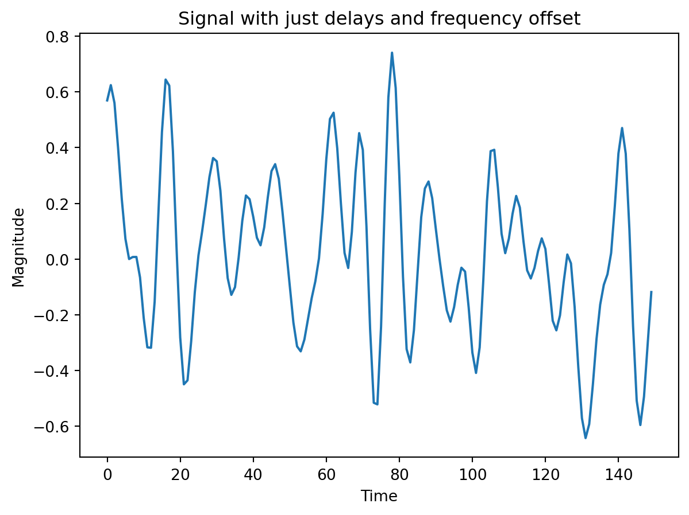
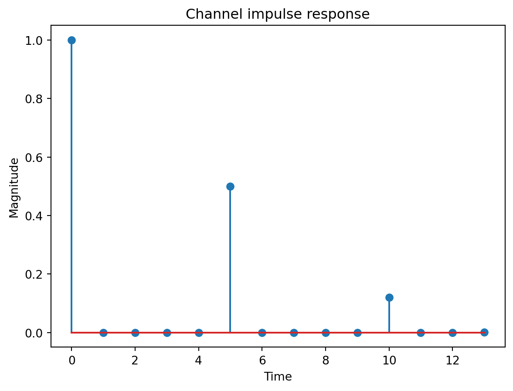
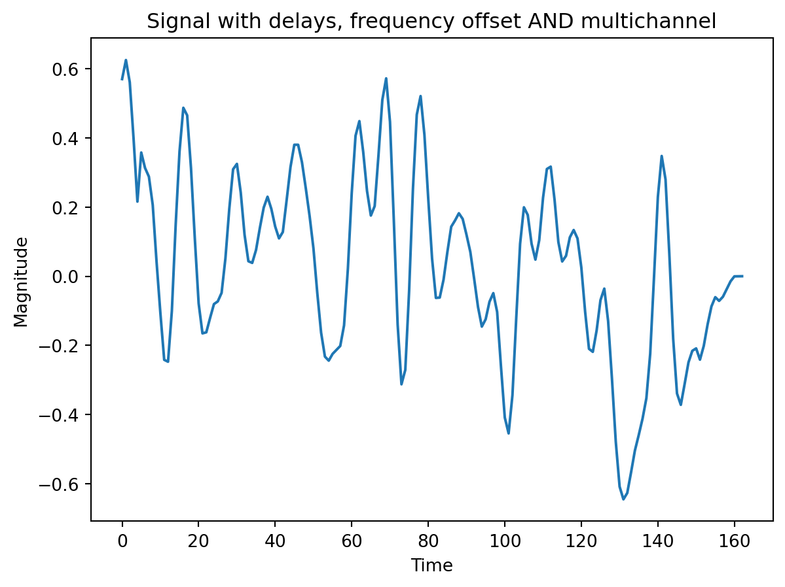
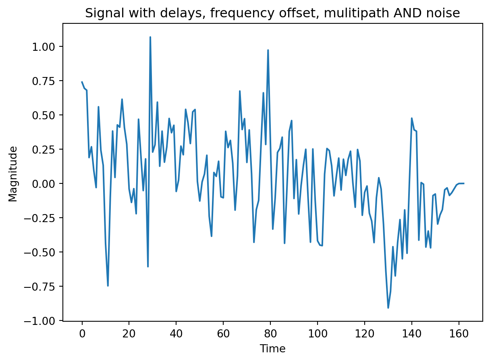
Signal at receiver
Wow

# Now that our channel is simulated, complete with signal and noise, let's filter at the receive end
# with our RRC filter. This will make the end-to-end channel response that of a raised cosine filter,
# which is good for minimizing ISI.
rx1 = signal.convolve(rx1, pulse)# Interpolate signal, so we can correlate with sub-sample accuracy
RS = 10 # Increase signal length by RS times (e.g. 10x for RS 10)
rx1i = signal.resample(rx1, np.shape(rx1)[0] * RS)
# We also need to interpolate the TX signals for comparison
tx1i = signal.resample(tx1, np.shape(tx1)[0] * RS)
tx2i = signal.resample(tx2, np.shape(tx2)[0] * RS)Code
Nd = RS # Number of samples to display
plt.figure(figsize=(16, 4))
plt.subplot(131)
plt.plot(np.abs(rx1[:Nd]), "bx-")
plt.ylabel("Value")
plt.title("Before interpolation")
plt.grid(True)
plt.subplot(132)
plt.plot(np.abs(rx1i[: Nd * RS - Nd]), "bx-")
plt.xlabel("Value")
plt.title("After interpolation")
plt.grid(True)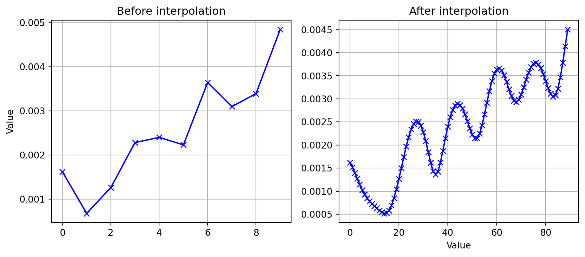
Interpolating a signal to ‘see’ with sub-sample accuracy
Now let’s use the crosscorrelation to see the delay between the transmitted and received signals.
rtx1 = np.abs(signal.correlate(rx1i, tx1i, "valid"))
rtx2 = np.abs(signal.correlate(rx1i, tx2i, "valid"))
plt.figure(figsize=(12, 4))
plt.plot(rtx1[: 100 * RS], "r.-")
max_tx1 = np.argmax(rtx1[: 100 * RS])
plt.axvline(x=max_tx1, color='r')
plt.text(max_tx1 + 3, 34500, f"Delay of {max_tx1} samples.", fontweight='bold')
plt.plot(rtx2[: 100 * RS], ".-")
max_tx2 = np.argmax(rtx2[: 100 * RS])
plt.axvline(x=max_tx2, color='b')
plt.text(max_tx2 + 3, 36500, f"Delay of {max_tx2} samples.", fontweight='bold')
plt.grid(True)
plt.xlabel("Interpolated sample number")
plt.ylabel("Correlation value")
plt.legend(("TX1", "TX2"))
plt.title("Location of received TX signals")Text(0.5, 1.0, 'Location of received TX signals')Autocorrelation of TX1
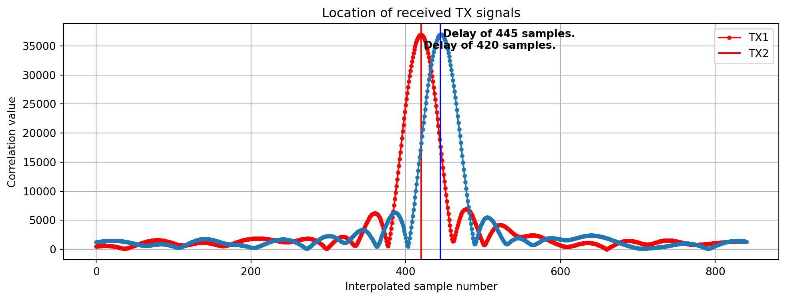
Interpolated sample delays between Rx and Tx channels
Observe that our delays are in the interpolated sample scale (so we can do sub-sample estimation with any amount of accuracy). Once we obtain these numbers we go back to our actual samples which are a factor of RS smaller.
txdelay = (max_tx2 - max_tx1) / RS
print(f"TX2 is behind TX1 by {txdelay:4f} samples")TX2 is behind TX1 by 2.500000 samples3 Results
We see that the TX2 signal was delayed by approximately 2.5 samples relative to TX1, as intended. Our coarse (per sample) and fine (subsample) delays applied when simulating our communication channel are visible in the plot as the difference in interpolated samples between the two correlation peaks.